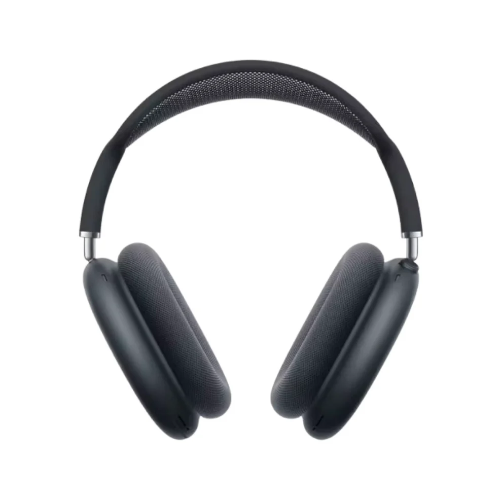

← Volver al catálogo
AirPods Max – Sonido de alta fidelidad y diseño premium

Sumérgete en una experiencia sonora inigualable con los AirPods Max, los auriculares inalámbricos de alta gama de Apple. Con un diseño elegante y materiales de primera calidad, ofrecen un audio envolvente con cancelación activa de ruido y un confort excepcional para largas sesiones de escucha.
Características principales:
- Audio espacial con seguimiento dinámico de la cabeza para un sonido inmersivo en 3D.
- Cancelación activa de ruido avanzada que bloquea el ruido ambiental.
- Modo transparencia para escuchar el entorno cuando lo necesites.
- Drivers dinámicos de alta fidelidad que ofrecen graves profundos, medios nítidos y agudos cristalinos.
- Almohadillas suaves y diadema ergonómica para máximo confort.
- Hasta 20 horas de reproducción con una sola carga.
- Conexión inalámbrica estable y emparejamiento fácil con dispositivos Apple.
Experimenta la combinación perfecta entre lujo, tecnología y sonido profesional.